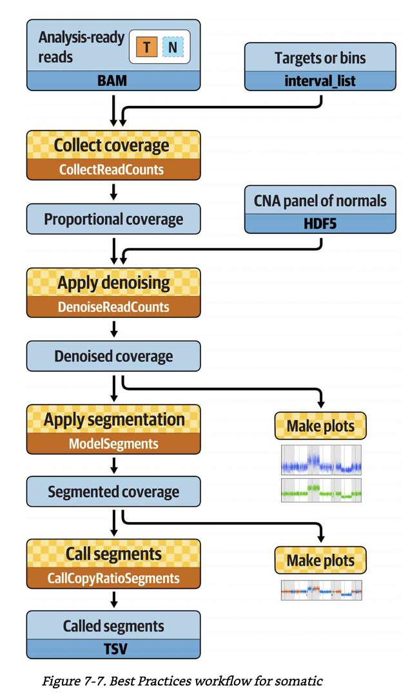

CNV calling pipeline¶
This is a pipeline for calling copy number variations from 76 matched tumor-normal whole genome sequencing (WGS) bams from 38 childhood acute lymphoblastic leukemia cases. BAM files have been preprocessed by the data preprocessing pipeline. Check out these GATK best practice documents:
(How to part I) Sensitively detect copy ratio alterations and allelic segments
(How to part II) Sensitively detect copy ratio alterations and allelic segments
GATK somatic CNV calling pipeline:¶
from 0.0.ExtractIntervalfromPON.sh to 1.9.FuncotateSegments.sh
Best practice workflow. A figure from GITC.

CNVkit pipeline¶
from 2.0.CnvkitAccess.sh to 2.3.1.Iamp21CnvkitPlot.sh